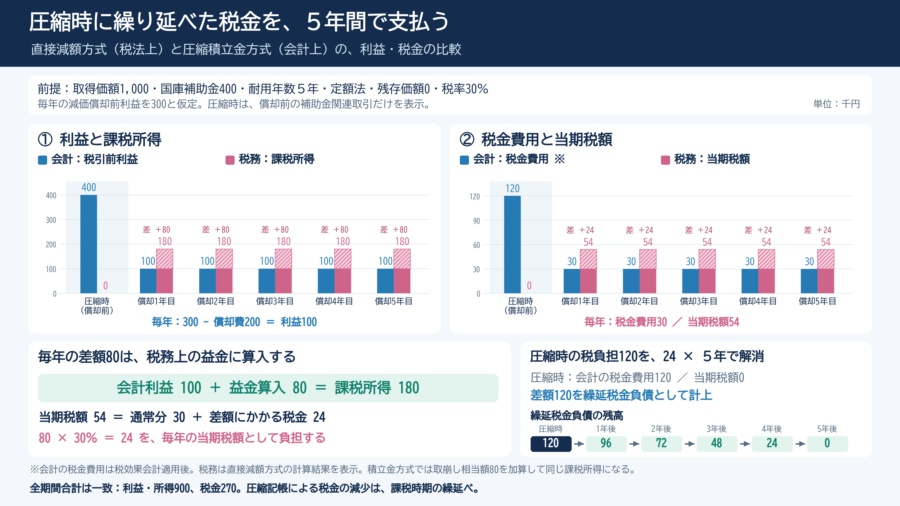
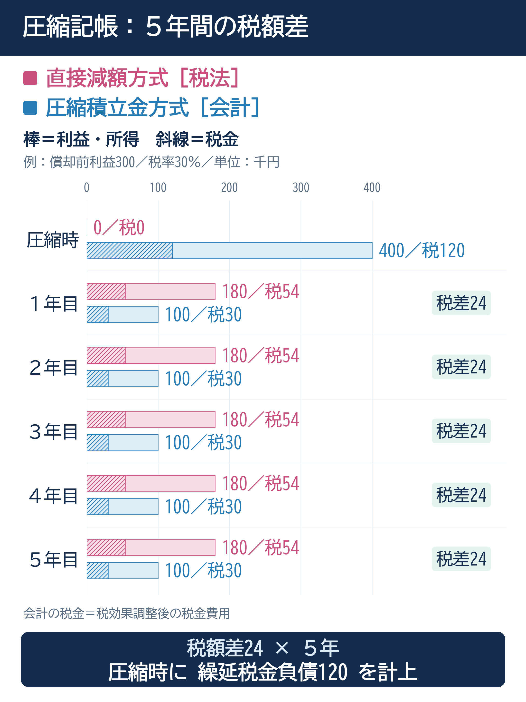

解答するときの注意
仕訳問題は指定された勘定科目の中から選びます。金額は円未満四捨五入、キャッシュ・フロー計算書と連結の設問は千円単位で、マイナスは「△」を付けます。
税効果会計を適用する設問では、税効果前の金額 × 実効税率（30％）で繰延税金資産・負債と法人税等調整額を必ず計算します。期間配分（ストック・オプション、直先差額、償却原価法）は「何か月分か」を先に数えてから金額を出します。
解説の凡例
すべての問題で、次の表示を共通して使用します。
各設問の問題文・資料を示します。
同じ論点の問題に共通して使える処理手順・判断基準です。
この問題の数値を当てはめ、途中計算と仕訳を省略せず示します。
税効果、期間帰属、勘定科目の選択、△表記などの失点しやすい箇所です。
公式の審査基準に基づく最終的な解答です。
出典：公益財団法人 全国商業高等学校協会主催 令和7年度 第17回 財務会計検定試験（2025年12月14日実施）
試験問題PDF 解答用紙PDF 模範解答PDF本記事は全商協会による公式解説ではありません。
PDF版のダウンロードはこちら
学校の授業で使用するなど、紙媒体での解説が必要な方は、こちらをお使いください。
設問一覧
正答一覧
| 番号 | 主な論点 | 正答 |
|---|---|---|
| 1 | 会計基準の正誤 | 1 ○ 2 × 3 × 4 ○ 5 × |
| 2 | 決算整理仕訳 | 1 株式報酬費用 540,000 2 減価償却費 4,800,000・圧縮積立金 1,680,000・繰延税金負債 720,000 3 ソフトウェア償却 2,250,000 4 利息費用 19,409・減価償却費 2,129,390 5 現金 90,000・長期貸付金 71,560／受取利息 161,560 |
| 3 問1 | 外貨建取引・為替予約 | （ア）330,000円 （イ）160,000円 （ウ）前払費用 2,500円 （エ）為替差益 28,500円 |
| 3 問2 | 貸倒引当金の見積り | （ア）100,000円 （イ）74,436円 （ウ）2,600,000円 （エ）3％ （オ）270,000円 （カ）2,808,836円 |
| 4 | キャッシュ・フロー計算書（間接法） | 営業ＣＦ 17,840／投資ＣＦ △4,120／財務ＣＦ 4,540／増減額 18,260／期首 10,600／期末 28,860（各行は設問別解説を参照） |
| 5 | 連結損益及び包括利益計算書 | 売上高 3,427,000／営業利益 261,900／経常利益 327,200／当期純利益 293,400／親会社株主 286,120／非支配株主 7,280／包括利益 298,500（各行は設問別解説を参照） |
設問別解説
第１問
問題文・資料を確認する（クリックで開閉）
わが国の会計諸基準に照らして，次の文章のうち正しいものには○を，誤っているものには×を解答欄に記入しなさい。なお，会計諸基準については，令和7年4月1日現在有効なもので，新しいものを優先すること。
一般的な解法
会計基準の正誤判定問題
- 文章を「定義」「計算方法」「表示区分」「制度の目的」のどれを問うているかに分け、基準の原文の言い回しを思い出す。
１．商業を営む企業が当期分の減価償却費を計上したとき，営業活動のためのものは販売費及び一般管理費として計上されるが，営業外のためのものは営業外費用として計上される。
減価償却費は、営業用資産なら販売費及び一般管理費、投資不動産など営業外の資産なら営業外費用に計上します。
Ａ．１．〇２．退職給付債務は，退職給付見込額のうち退職時までに発生していると認められる額を割り引いて計算する。
退職給付債務は「退職給付見込額のうち期末までに発生していると認められる額」を割り引いて計算します。「退職時までに」発生している額は退職給付見込額そのものになってしまうので誤りです。
Ａ．２．×３．有形固定資産を購入した場合の取得原価は，購入代価に付随費用を加えた金額とするが，値引きまたは割戻しがある場合，それらを購入代価より控除しない。
購入代価から値引き・割戻しを控除した額に付随費用を加えたものが取得原価です。「控除しない」は誤りです。
Ａ．３．×４．その他の包括利益とは，包括利益のうち当期純利益に含まれない部分をいう。
包括利益 ＝ 当期純利益 ＋ その他の包括利益 なので、その他の包括利益は「包括利益のうち当期純利益に含まれない部分」です。
Ａ．４．〇５．金融商品取引法に基づく財務諸表監査は，主に債権者保護の観点から行われる。
金融商品取引法は投資者保護を目的としています。債権者保護は会社法の観点です。
Ａ．５．×答え 1 ○ 2 × 3 × 4 ○ 5 ×第２問
仕訳問題問題文・資料を確認する（クリックで開閉）
次の各取引の仕訳を示しなさい。なお，計算上端数が生じる場合には，円未満を四捨五入すること。ただし，使用する勘定科目等は次の中から最も適切なものを選ぶこと。
現金／建物減価償却累計額／繰延税金資産／別途積立金／新株予約権／ソフトウェア償却／利息費用／短期貸付金／機械装置減価償却累計額／資産除去債務／圧縮積立金／受取利息／減価償却費／固定資産除却損／建物／ソフトウェア／繰延税金負債／繰越利益剰余金／国庫補助金受贈益／株式報酬費用／固定資産圧縮損／機械装置／長期貸付金／その他資本剰余金／自己株式／新株予約権戻入益／支払利息／法人税等調整額
一般的な解法
個別論点の決算整理仕訳
- 各勘定科目のホームポジションを把握して、何が増加／減少したのかというのをもとに仕訳を切る。
- ストック・オプション：株式報酬費用 ＝ 公正な評価単価 × 権利確定見込数 × 経過月数 ÷ 対象勤務期間 － 既計上額。相手科目は新株予約権。
- 積立金方式の圧縮記帳：減価償却は取得原価で行い、圧縮積立金を耐用年数で取り崩す。税効果適用時は積立金（税効果後）の取崩と繰延税金負債の取崩を同時に行う。
- 資産除去債務：利息費用 ＝ 期首債務 × 割引率、減価償却は（取得原価 ＋ 除去費用の現在価値）÷ 耐用年数。償却原価法（利息法）：受取利息 ＝ 帳簿価額 × 実効利子率、現金受取額との差を貸付金に加算。
１．ストック・オプション１．北海道商事株式会社（決算年1回3月31日）は，×7年10月1日に従業員に対して合計42個のストック・オプションを付与した。権利確定日は×9年9月30日であり，付与日における公正な評価単価は新株予約権1個あたり60,000円である。本日（×8年3月31日），決算日において必要な仕訳を示しなさい。なお，決算日における権利確定見込数は36個である。
株式報酬費用 計上金額
公正な評価単価 × 決算日の権利確定見込数 × 付与日から計算日までの経過月数 ÷ 対象勤務期間 － 計上済株式報酬費用ストック・オプションとは、会社の従業員等が、予め決められた価格で自社株式を購入できる権利を付与する形の報酬形態です。業績向上等によって株価が上昇すれば、購入価格との差額を利益として受け取ることができます。
計算に必要な事項を整理します。
公正な評価単価：60,000円
決算日における権利確定見込数：36個
付与日から計算日までの経過月数：６か月
対象勤務期間は×7年10月1日〜×9年9月30日の 24か月
このストック・オプションに係る計上済みの株式報酬費用はありません。60,000 × 36個 × 6か月 ÷ 24か月 = 540,000
借方科目 金額 貸方科目 金額 株式報酬費用 540,000 新株予約権 540,000 ２．積立金方式の圧縮記帳（税効果あり）２．九州商事株式会社（決算年1回）は，×7年4月1日に建物（取得原価：48,000,000円，耐用年数：10年，残存価額：零（0）円，償却方法：定額法，記帳方法：間接法）をかねて受け取っていた国庫補助金24,000,000円と自己資金24,000,000円で取得し，使用を開始していた。なお，国庫補助金相当額を×8年3月31日に積立金方式で圧縮記帳を行っている。本日（×9年3月31日），決算日のため減価償却を行う。また，実効税率30％として税効果会計を適用すること。


国庫補助金を使用して購入した固定資産でも、取得原価は実際の金額（国庫補助金＋自己資金分）で計上されます。しかしながら、これをもとに減価償却を行っていくと、自己資金から支払っていない分まで損失に計上されてしまいます。そのため、「圧縮記帳」を行います。
積立金方式の圧縮記帳では、取得原価はそのままで、差額を「圧縮積立金」として繰越利益剰余金を取り崩し、純資産の部に計上します。その後、減価償却とともに対応分を繰越利益剰余金へ振り戻します。
ただし、積立金方式は税法上認められていないため、直接減額方式（取得原価を自己資金からの支払分のみにする方法）との差額分の税金を調整する必要があります。
直接減額方式では、国庫補助金を受贈した際に、その金額分を取得原価から減額し、「固定資産圧縮損」を計上します。そのため、積立金方式の場合は、直接減額方式に比べて毎年の減価償却費が多くなり、会計上は以降の税金が少なくなりますが、税法上は、その分の金額は損金に算入されないため、実際の税額は過剰な減価償却費×税率分多くなります。
この差異を調整する税効果会計が必要になります。
減価償却は取得原価48,000,000円で行います。国庫補助金相当額24,000,000円は前期末に圧縮積立金として積み立てられており、税効果会計を適用しているので、繰延税金負債は 24,000,000 × 0.3 ＝ 7,200,000円、積立金はそれを除いた 24,000,000 － 7,200,000 ＝ 16,800,000円 が計上されています。これらを耐用年数10年で取り崩します。減価償却費：48,000,000 ÷ 10年 = 4,800,000
圧縮積立金の取崩：16,800,000 ÷ 10年 = 1,680,000
繰延税金負債の取崩：7,200,000 ÷ 10年 = 720,000
借方科目 金額 貸方科目 金額 減価償却費 4,800,000 建物減価償却累計額 4,800,000 圧縮積立金 1,680,000 繰越利益剰余金 1,680,000 繰延税金負債 720,000 法人税等調整額 720,000 ３．市場販売目的ソフトウェア３．当期首（×7年度期首）に無形固定資産として計上した市場販売目的のソフトウェア4,500,000円について，決算につき見込販売数量に基づいて減価償却を行う。なお，当該ソフトウェアの見込有効期間は3年であり，当期の販売数量と次期以降の各年度見込販売数量は次のとおりである。
×7年度：1,500個 ×8年度：700個 ×9年度：800個見込販売数量に基づく償却額と、残存有効期間に基づく均等配分額のいずれか大きい方を償却します。
見込販売数量による額：
4,500,000 × 1,500個 ÷ (1,500 ＋ 700 ＋ 800)個 =
4,500,000 × 1,500 ÷ 3,000 = 2,250,000
均等配分額：
4,500,000 ÷ 3年 = 1,500,000
→ 大きい方 2,250,000
借方科目 金額 貸方科目 金額 ソフトウェア償却 2,250,000 ソフトウェア 2,250,000 ４．資産除去債務当社は当期首（×7年度期首）に機械装置（取得原価：10,000,000円，耐用年数：5年，残存価額：零（0）円，償却方法：定額法，記帳方法：間接法）を取得し，使用を開始した。当社は使用後に機械装置を除去する法的義務がある。機械装置を除去する際の支出は750,000円と見積もられている。割引率は年3％で，当期首の機械装置の取得および資産除去債務の計上は適正に処理されている。当期末の決算整理仕訳（利息費用の計上と減価償却）を行う。なお，割引計算をする際には次の現価係数を用いること。（現価係数 5年0.8626）
当期首に計上した資産除去債務は 750,000 × 0.8626 ＝ 646,950円で、同額が機械装置の取得原価に加算されています。
利息費用：646,950 × 3％ = 19,408.5 → 19,409（円未満四捨五入）
減価償却費：(10,000,000 ＋ 646,950) ÷ 5年 = 2,129,390
借方科目 金額 貸方科目 金額 利息費用 19,409 資産除去債務 19,409 減価償却費 2,129,390 機械装置減価償却累計額 2,129,390 ５．償却原価法（利息法）×7年4月1日に，東海商事株式会社へ債権金額5,000,000円を4,616,000円で貸し付けた。（貸付期間：5年，券面利子率：年1.8％，実効利子率：年3.5％，利払日：3月末日）本日×8年3月31日（決算日）に，利払日を迎え，利息を現金で受け取った。なお，債権金額と取得価額の差額は，金利の調整と認められるため，償却原価法（利息法）で処理する。
受取利息は帳簿価額（取得価額）に実効利子率を掛けた額で、現金で受け取るのは債権金額に券面利子率を掛けた額です。差額を貸付金の帳簿価額に加えます。期末日から１年を超えて返済日が到来するので、「長期貸付金」で処理します。
受取利息（実効利子）：4,616,000 × 3.5％ = 161,560
現金受取額（券面利子）：5,000,000 × 1.8％ = 90,000
償却額：161,560 － 90,000 = 71,560 → 長期貸付金に加算
借方科目 金額 貸方科目 金額 現金 90,000 受取利息 161,560 長期貸付金 71,560 第３問
外貨建取引（為替予約の振当処理）と貸倒引当金の見積り一般的な解法
外貨換算と貸倒見積高の算定
- 外貨建金銭債権債務は決算日の直物相場で換算し、差額は為替差損益。為替予約（振当処理）を付した債務は先物相場で固定し、直々差額（取引日→予約日の直物差）は予約日の損益、直先差額（予約日の直物→先物）は決済日までの期間で月割配分する。
- キャッシュ・フロー見積法：条件緩和後の将来キャッシュ・フロー（利息 × 年金現価係数 ＋ 元本 × 現価係数）を当初の約定利子率で割り引き、帳簿価額との差額を貸倒見積高とする。
- 貸倒実績率法：各年の（翌期の貸倒損失 ÷ 期末一般債権残高）の平均。差額補充法の繰入額 ＝ 各区分の貸倒見積高合計 － 決算整理前の貸倒引当金残高。
問1問題文・資料を確認する（クリックで開閉）
問1 次の外貨建取引に関する〈資料〉に基づいて，当期末（×2年3月31日 決算年1回）の貸借対照表及び損益計算書に計上する解答用紙の（ア）～（エ）の金額を答えなさい。なお，当社は当期より営業を開始しており〈資料〉の他に外貨建取引及び掛け取引は無いものとする。
〈資料〉
⑴ 輸入取引に関する資料
×2年2月1日 A社から商品1,000ドルを輸入し，代金は掛けとした。決済日は×2年4月30日である。
×2年3月1日 上記の買掛金（1,000ドル）に対して，為替予約を締結した。先物為替相場は1ドルあたり160円である。なお，為替予約については振当処理を行うこと。
×2年3月31日 決算日を迎えたため直先差額を期間配分した。⑵ 輸出取引に関する資料
×1年12月1日 B社へ商品3,000ドルを輸出し，代金は掛けとした。
×2年2月1日 上記の売掛金のうち1,000ドルを現金で回収した。⑶ 決算日における外貨建金銭債権・債務 売掛金 2,000ドル 買掛金 1,000ドル
⑷ 直物為替相場に関する資料（1ドルあたり）
日付 直物為替相場（1ドル） ×1年12月1日 148円 ×2年2月1日 150円 ×2年3月1日 155円 ×2年3月31日 165円 解答欄：（ア）売掛金 円 （イ）買掛金 円 （ウ）前払費用・前受収益（どちらかを○で囲む） 円 （エ）為替差損・為替差益（どちらかを○で囲む） 円
売掛金外貨建の資産／負債は基本的に決算日時点の為替相場を元に換算します。決算日の為替相場は１ドル165円ですので、期末残高をそのまま換算します。
2,000ドル × 165円／ドル ＝ 330,000Ａ．（ア） 330,000(円)買掛金為替予約を付した債権債務については、その予約した日の先物相場を元に換算します。予約日(3/1)の先物相場は１ドル160円ですので、その金額で為替予約をした金額分換算します。
1,000ドル × 160円／ドル ＝ 160,000Ａ．（イ） 160,000(円)直先差額の分配予約日の直物相場と先物相場との差額による為替差損益は予約日から決済日までの期間がかかって確定する損益であるため、振当処理の場合には、損益を配分して期間対応させます。
買掛金（負債）の増加のため、為替差損が計上され、次期分は前払費用勘定に振り替えられます。直先差額（155円 → 160円）：1,000 × 5円 = 5,000（為替差損） …… 3/1〜4/30の2か月で配分
次期分：5,000 × １ ÷ ２ ＝ 2,500 …… 前払費用Ａ．（ウ） 前払費用 2,500(円)為替差損益合計ここまでで為替差損益が発生する取引場面は、振当処理ですので
１．×２年２月１日の売掛金回収時 ２．×２年３月１日の為替予約締結時の直々差額
３．同日の直先差額（当期に計上する分）
４．決算日の売掛金の評価替え
になります。
直々差額とは、為替予約を付した対象の評価替え前の簿価と予約日の直物相場による換算額との差額です。１．：1,000 × (150 － 148) ＝ 2,000 …… 為替差益（資産増加）
２．：1,000 × (155 － 150) ＝ 5,000 …… 為替差損（負債増加）
３．：2,500 …… 為替差損（負債増加）
４．：2,000ドル × (165 － 148) = 34,000 …… 為替差益（資産増加）
為替差損益の合計：2,000 － 5,000 － 2,500 ＋ 34,000 = 28,500（為替差益）Ａ．（エ） 為替差益 28,500(円)答え 問1 （ア）売掛金 330,000円 （イ）買掛金 160,000円 （ウ）前払費用 2,500円 （エ）為替差益 28,500円問題文・資料を確認する（クリックで開閉）
問2 次の〈資料〉に基づき，当期末（×5年3月31日 決算年1回）の解答用紙の（ア）～（カ）の金額または数値を答えなさい。
〈資料〉ⅰ 決算整理前残高試算表（一部）（単位：円）
借方 金額 貸方 金額 受取手形 5,000,000 貸倒引当金 135,600 売掛金 7,000,000 受取利息 （各自推定） 貸付金 2,000,000 ⅱ 貸倒引当金に関する資料
⑴ 当社は金銭債権を「一般債権」，「貸倒懸念債権」，「破産更生債権等」に区分している。
⑵ 一般債権については貸倒実績率法，貸倒懸念債権についてはキャッシュ・フロー見積法，破産更生債権等については財務内容評価法に基づき貸倒見積高を算定している。
⑶ 貸倒引当金は差額補充法により設定する。なお，決算整理前残高試算表の貸倒引当金のうち，貸付金に対する引当金は70,000円，残額は全て一般債権に対するものである。
⑷ 決算整理前残高試算表の貸付金2,000,000円は，前々期首（×2年4月1日）にA社に対して貸し付けたもの（返済期日：×7年3月31日，利率：年5％，利払日：年1回 3月31日）である。A社は経営破綻に陥っていないが，債務の弁済に重大な問題が生じる可能性があるため，貸倒懸念債権とする。当期末において利息を受け取った後，A社から条件緩和の申し出を受け入れ，次期以降の利率を年3％に引き下げた。なお，当社は当期以前にこれ以外に貸付金を保有していない。また，割引計算をする際には下記の〈現価係数〉及び〈年金現価係数〉を用いること。
現価係数 3％ 現価係数 5％ 年金現価係数 3％ 年金現価係数 5％ 1年 0.9709 0.9524 2年 0.9426 0.9070 1.9135 1.8594 3年 0.9151 0.8638 2.8286 2.7232 ⑸ 売掛金のうち3,000,000円はB社に対するものであり，当期にB社が経営破綻に陥ったため，破産更生債権等とする。なお，B社より担保として提供されている土地の処分見込額は400,000円であり，債権総額から担保の処分見込額を控除した残額を貸倒見積高とする。
⑹ 一般債権については，一般債権の期末残高に対する次期の貸倒損失発生額により，各期の貸倒実績率を求め，過去3年間の平均値により当期末の一般債権に対する貸倒実績率を算定する。なお，一般債権の平均回収期間は1年未満であり，貸倒損失はすべて翌期に発生している。過去3年間の一般債権の期末残高と貸倒損失発生額は下記のとおりであった。
×2年3月31日 ×3年3月31日 ×4年3月31日 ×5年3月31日 一般債権残高 8,250,000円 9,380,000円 9,040,000円 （各自推定） 貸倒損失発生額 － 330,000円 281,400円 180,800円 解答欄：（ア）当期に計上する受取利息 円 （イ）キャッシュ・フロー見積法による貸倒見積高 円 （ウ）破産更生債権等に対する貸倒見積高 円 （エ）当期末の一般債権に対する貸倒実績率 ％ （オ）当期末の一般債権に対する貸倒見積高 円 （カ）当期の貸倒引当金繰入額 円
貸付金に関する事項当期末利息は従前通り利率５％で計算する。
貸倒懸念債権であるため、キャッシュ・フロー見積法により引当金を設定する。
将来回収する金額（利息及び元本）を当初の約定利子率で割り引き、帳簿価額との差額を貸倒見積高とする。
なお、貸付金には既に70,000円の貸倒引当金が計上されているため、繰入額を計算する際は注意する。利息額：2,000,000 × 5％ = 100,000
将来CF
元本：2,000,000 × 0.9070 ＝ 1,814,000
利息回収額：2,000,000 × ３% × 1.8594 ＝ 111,564
合計：1,814,000 ＋ 111,564 ＝ 1,925,564
貸倒見積高：2,000,000 － 1,925,564 ＝ 74,436
貸倒引当金繰入額：74,436 － 70,000 ＝ 4,436売掛金（破産更生債権等）に関する事項売掛金のうち、3,000,000は破産更生債権等となる。
破産更生債権等は担保額を控除した残額すべてを貸倒見積高とする。貸倒見積高：3,000,000 － 400,000 ＝ 2,600,000
（破産更生債権等に対する貸倒引当金は設定されていないため、繰入額も同じ）一般債権に関する事項一般債権（受取手形及び破産更生債権等に該当しない売掛金）は、貸倒実績率法により求める。
貸倒損失発生額をその債権が発生した期（損失発生の前期）の債権残高で割り、３か年平均した率で貸倒引当金を設定する方法。
なお、一般債権に対する貸倒引当金残高は破産更生債権である貸付金に対する70,000円を除いた65,600円である。実積率の計算 ×2年度末：330,000 ÷ 8,250,000 = 4％
×3年度末：281,400 ÷ 9,380,000 = 3％
×4年度末：180,800 ÷ 9,040,000 = 2％
平均：(4 ＋ 3 ＋ 2) ÷ 3 = 3％
一般債権残高：受取手形 5,000,000 ＋ 売掛金(一般債権部分) 4,000,000 ＝ 9,000,000
貸倒見積高：9,000,000 × ３% ＝ 270,000
貸倒引当金繰入額：270,000 － 65,600 ＝ 204,400
貸倒引当金繰入額合計：4,436 ＋ 2,600,000 ＋ 204,400 ＝ 2,808,836答え 問2 （ア）100,000円 （イ）74,436円 （ウ）2,600,000円 （エ）3％ （オ）270,000円 （カ）2,808,836円第４問
キャッシュ・フロー計算書（間接法）問題文・資料を確認する（クリックで開閉）
以下の貸借対照表，損益計算書（決算日3月31日，決算年1回）及び〔その他の資料〕に基づき，解答用紙に示した間接法による×7年度のキャッシュ・フロー計算書を完成しなさい。なお，金額がマイナスの場合には，△を付すこと。
資産 ×6年度末 ×7年度末 負債・純資産 ×6年度末 ×7年度末 現金預金 11,140 29,700 買掛金 44,240 56,700 売掛金 24,000 27,000 短期借入金 45,160 38,200 貸倒引当金 △480 △540 未払金 15,300 12,100 有価証券 11,040 11,240 未払法人税等 2,680 2,900 商品 187,100 192,200 資本金 160,000 180,000 建物 242,000 242,000 資本準備金 18,100 18,100 減価償却累計額 △151,250 △157,300 利益準備金 17,000 17,850 関係会社株式 1,050 2,230 繰越利益剰余金 40,420 41,710 長期貸付金 18,300 21,030 合計 342,900 367,560 合計 342,900 367,560
損益計算書 金額 売上高 672,000 売上原価 519,000 売上総利益 153,000 給料 72,000 支払家賃 36,000 広告料 13,160 貸倒引当金繰入額 60 旅費交通費 1,500 減価償却費 6,050 水道光熱費 9,420 営業利益 14,810 受取利息 290 受取配当金 280 有価証券評価益 160 有価証券売却益 130 支払利息 470 経常利益 15,200 税引前当期純利益 15,200 法人税，住民税及び事業税 4,560 当期純利益 10,640 〔その他の資料〕
- 売上及び仕入取引はすべて掛けによるものとし，当期中に貸倒れは発生していない。
- 給料，支払家賃，広告料，旅費交通費，水道光熱費は発生した全額を現金で支払っている。
- 利息及び配当金の受取額と利息の支払額は「営業活動によるキャッシュ・フロー」の区分に記載する。
- 現金預金のうち前期末540千円，当期末840千円は，満期が3ヶ月を超える定期預金である。また当期中に定期預金（3ヶ月超）の新規預入れ ？ 千円と払戻し550千円があった。
- 当期中に有価証券の一部を ？ 千円で売却した。また有価証券を1,460千円で購入した。代金はどちらも現金で決済している。なお，決算整理前残高は11,080千円である。
- 関係会社株式については， ？ 千円で購入し，代金は現金で支払っている。
- 短期借入金については，現金で38,400千円の新規借入れと ？ 千円の返済をしている。
- 長期貸付金については，現金で ？ 千円の新規貸付けと830千円の回収をしている。
- 事業規模拡大のため，株式20,000千円を発行し，全額の引き受け・払い込みを受け，払込金は当座預金とした。ただし，資本金とする額は会社法が規定する原則を適用する。
- 当期に剰余金の配当として，株主に対し ？ 千円を現金で支払うとともに，会社法の規定に基づいて利益準備金 ？ 千円を積み立てている。
解答用紙：キャッシュ・フロー計算書（×7年4月1日から×8年3月31日まで，単位：千円）
営業活動によるキャッシュ・フロー：〔 〕( )／減価償却費( )／貸倒引当金の増減額( )／受取利息及び受取配当金( )／支払利息( )／有価証券評価益( )／有価証券売却益( )／売上債権の増減額( )／棚卸資産の増減額( )／仕入債務の増減額( )／未払金の増減額( )／小計( )／利息及び配当金の受取額( )／利息の支払額( )／法人税等の支払額( )／営業活動によるキャッシュ・フロー( )
投資活動によるキャッシュ・フロー：定期預金の預入による支出( )／定期預金の払戻による収入( )／有価証券の取得による支出( )／有価証券の売却による収入( )／関係会社株式の取得による支出( )／長期貸付による支出( )／長期貸付金の回収による収入( )／投資活動によるキャッシュ・フロー( )
財務活動によるキャッシュ・フロー：短期借入れによる収入( )／短期借入金の返済による支出( )／株式の発行による収入( )／配当金の支払額( )／財務活動によるキャッシュ・フロー( )
現金及び現金同等物の増減額（△は減少）( )／現金及び現金同等物の期首残高( )／現金及び現金同等物の期末残高( )
一般的な解法
間接法キャッシュ・フロー計算書の作成
- 営業ＣＦは税引前当期純利益から出発し、非資金費用（減価償却費・引当金増加）を加算、営業外・特別損益を除外（受取利息等は減算、支払利息は加算）、営業資産の増加は減算・営業負債の増加は加算して小計を出す。
- 小計の下で利息・配当金の受取額、利息の支払額、法人税等の支払額（期首未払 ＋ 当期計上 － 期末未払）を調整する。
- 投資・財務ＣＦの「？」は勘定の増減（期首 ＋ 増加 － 減少 ＝ 期末）から逆算する。
- 満期が３か月超の定期預金は、現金及び現金同等物に当たらない。
キャッシュ・フロー計算書は営業CFの書き方によって直接法と間接法の２つに分かれます。
直接法では、主要取引ごとにキャッシュの動きを明確にして営業CFを求める方法です。
間接法では、税引前当期純利益に、営業CFとのズレの理由を加減算して営業CFを求めていく方法です。B/S・P/Lをもとに作成できるため、簡単に作成できるというメリットがあります。
営業CFの「小計」から下は、両者で同じになります。
基本的に、解答欄の上から順番に対象のものを埋めていけば解答できます。営業活動によるキャッシュ・フロー間接法による営業CFの計算は、あくまで税引前当期純利益を営業CFに合わせるための計算なので、符号が直感と異なる場合があります。
その理由としては、主に以下の３つの調整項目があり、
１．営業外・特別損益項目 → 営業活動とは関係なく、営業CFの計算から除外するため、損失は利益に加算、収益は減算する。
２．非資金損益項目 → 実際にキャッシュ・フローが発生しているわけではないため、損失は利益に加算、収益は減算する。
３．営業資産・負債 → 実際にキャッシュ・フローが発生しているわけではないため、減少は利益に加算、増加は減算する。
これらのズレを解消させるのが営業CF計算です。
なお、一番頭の括弧には「税引前当期純利益」が入ります。間接法は当期純利益に加減算していくこと、法人税支払額の項目があることから"税引前"の当期純利益額を記入すると考えましょう。税引前当期純利益：（PL）15,200
減価償却費：（PL）6,050
貸倒引当金の増減額：△（－540(7末B/S) －（－480）(6末B/S)） = 60
受取利息及び受取配当金：（PL）△(290 ＋ 280) = △570
支払利息：（PL）470
有価証券評価益：（PL）△160
有価証券売却益：（PL）△130
売上債権の増減額：△（27,000(7末B/S) － 24,000(6末B/S)）：△3,000
棚卸資産の増減額：△（192,200(7末B/S) － 187,100(6末B/S)）：△5,100
仕入債務の増減額：△（56,700(7末B/S) － 44,240(6末B/S)）：12,460
未払金の増減額：△（12,100(7末B/S) － 15,300(6末B/S)）：△3,200
小計 = 15,200 ＋ 6,050 ＋ 60 － 570 ＋ 470 － 160 － 130 － 3,000 － 5,100 ＋ 12,460 － 3,200 = 22,080以降は符号はキャッシュの増減通りです。
利息及び配当金の受取額：570
利息の支払額：△470
法人税等の支払額：期首未払 2,680 ＋ 当期計上 4,560 － 期末未払 2,900 = 4,340 → △4,340
営業活動によるＣＦ = 22,080 ＋ 570 － 470 － 4,340 = 17,840投資活動によるキャッシュ・フロー「？」を勘定の増減から逆算します。
定期預金：
前期末540 ＋ 預入？ － 払戻550 = 当期末840
預入 ＝ 840 － 540 ＋ 550 ＝ 850 → △850
払戻 550
有価証券：
取得：△1,460（購入代価）
前期末11,040 ＋ 購入1,460 － 売却簿価 = 決算整理前 11,080
売却簿価 ＝ －11,080 ＋ 11,040 ＋ 1,460 → 1,420
売却収入：1,420 ＋ 売却益130 = 1,550
関係会社株式の取得：
当期末2,230 － 前期末1,050 = 1,180 → △1,180
長期貸付金： 前期末18,300 ＋ 新規？ － 回収830 = 当期末21,030
新規 ＝ 21,030 － 18,300 ＋ 830 ＝ 3,560 → △3,560
回収：830
投資活動によるＣＦ ＝ － 850 ＋ 550 － 1,460 ＋ 1,550 － 1,180 － 3,560 ＋ 830 = △4,120財務活動によるキャッシュ・フロー短期借入金： 新規借入：38,400
前期末45,160 ＋ 新規38,400 － 返済？ = 当期末38,200
返済 ＝ －38,200 ＋ 45,160 ＋ 38,400 ＝ 45,360 → △45,360
株式の発行：20,000
配当金： 利益準備金：当期末17,850 － 前期末17,000 = 850(利益準備金積立額)より、積立額は配当額の1/10（（資本準備金 18,100 ＋ 利益準備金 17,850 = 35,950 は資本金 180,000 × 1/4 = 45,000 未満なので1/10全額を積立））なので、
配当額 ＝ 850 × 10 ＝ 8,500 → △8,500
財務活動によるＣＦ = 38,400 － 45,360 ＋ 20,000 － 8,500 = 4,540現金及び現金同等物の増減額 = 17,840 － 4,120 ＋ 4,540 = 18,260
期首残高 = 11,140 － 540（3か月超定期預金）= 10,600
期末残高 = 10,600 ＋ 18,260 = 28,860（＝ 29,700 － 840）第５問
連結会計問題文・資料を確認する（クリックで開閉）
親会社および子会社の×7年3月31日（決算年1回）における資料に基づき，解答用紙の連結損益及び包括利益計算書を完成しなさい。なお，法人税等の実効税率は30％とする。また，法人税等調整額の金額がマイナスの場合には，数字の前に△を付すこと。
〈資料1〉×7年3月31日における個別財務諸表（単位：千円）
資産 親会社 子会社 負債・純資産 親会社 子会社 現金及び預金 633,300 300,300 買掛金 383,800 311,000 売掛金 670,000 140,000 短期借入金 629,600 92,800 貸倒引当金 △6,700 △1,400 長期借入金 1,066,400 80,000 商品 113,700 77,800 繰延税金負債 ― 11,200 短期貸付金 618,000 36,000 資本金 204,400 214,400 貸倒引当金 △61,800 △1,600 利益剰余金 654,100 68,400 建物 105,000 360,000 その他有価証券評価差額金 260,000 ― 減価償却累計額 △77,700 △180,000 土地 85,600 46,700 その他有価証券 718,900 ― 子会社株式 300,000 ― 繰延税金資産 100,000 ― 合計 3,198,300 777,800 合計 3,198,300 777,800
費用 親会社 子会社 収益 親会社 子会社 売上原価 2,294,900 719,000 売上高 2,635,400 991,600 貸倒引当金繰入額 4,400 280 受取利息 41,600 1,900 減価償却費 2,100 9,000 受取配当金 101,900 ― その他の営業費用 117,200 207,620 土地売却益 13,000 10,000 支払利息 59,900 8,200 法人税等 30,300 15,900 法人税等調整額 5,300 1,500 当期純利益 277,800 42,000 合計 2,791,900 1,003,500 合計 2,791,900 1,003,500
株主資本等変動計算書 親会社 子会社 資本金当期首残高 204,400 214,400 資本金当期末残高 204,400 214,400 利益剰余金当期首残高 428,900 41,400 剰余金の配当 △52,600 △15,000 当期純利益 277,800 42,000 利益剰余金当期末残高 654,100 68,400 その他有価証券評価差額金当期首残高 254,900 ― 当期変動額 5,100 ― その他有価証券評価差額金当期末残高 260,000 ― 〈資料2〉連結に関する事項
- 親会社は×6年3月31日に300,000千円で子会社の発行済株式の80％を取得した。取得時の子会社の資産および負債の時価について，土地（帳簿価額：10,000千円，時価：16,000千円）を除いて時価と帳簿価額は同一であった。土地の評価差額については，税効果会計を適用する。また，取得時における子会社の資本の金額は，資本金：214,400千円，利益剰余金：41,400千円であった。
- 子会社の当期純利益〈資料1〉のうち非支配株主持分割合に相当する額は，非支配株主持分に振り替える。
- のれんは，発生年度の翌年から20年間にわたって定額法により償却する。
- 4－1．当期首から，親会社は子会社に商品を販売している。なお，当期中に親会社は子会社に対して商品を200,000千円で掛け販売した。
4－2．子会社の期末商品のうち，42,000千円は当期に親会社から仕入れたものである。なお，親会社が子会社に販売する際の価格は原価の20％増しで設定しており，未実現利益の消去にあたっては，税効果会計を考慮して処理する。また，子会社の期首商品に親会社から仕入れたものはなかった。- 親会社の期末売掛金のうち，100,000千円は子会社に対するものである。親会社は期末売掛金に対して1％の貸倒引当金を設定している。これについて税効果会計を考慮して処理する。この貸倒引当金は，税務上，損金算入が認められたため，個別上，繰延税金資産を計上していない。なお，当期首時点では，親会社の売掛金のうち子会社に対するものはなかった。
- 当期首において，子会社は親会社に対して帳簿価額12,000千円の土地を20,000千円で売却した。当期末現在，親会社はこの土地を保有している。なお，これについて税効果会計を考慮して処理する。
- 子会社の短期貸付金のうち，20,000千円は親会社に対するものである。この貸付金は，当期首に利率年3％，利払日3月末日（年1回），期間1年で貸し付けたものである。なお，利息の受け払いは既に行われている。また，子会社はこの貸付金に対する貸倒引当金を設定していない。
- 親会社および子会社が，当期中に株主に対して支払った利益剰余金を原資とする配当金は，次のとおりである。親会社 52,600千円 子会社 15,000千円
- 親会社の繰延税金資産と繰延税金負債，子会社の繰延税金資産と繰延税金負債については，それぞれ相殺を行なう。
解答用紙：連結損益及び包括利益計算書（×6年4月1日から×7年3月31日まで，単位：千円）
Ⅰ 売上高( )／Ⅱ 売上原価( )／売上総利益( )／Ⅲ 販売費及び一般管理費：貸倒引当金繰入額( )・減価償却費( )・のれん償却額( )・その他の営業費用 324,820／営業利益( )／Ⅳ 営業外収益：受取利息( )・受取配当金( )／Ⅴ 営業外費用：支払利息( )／経常利益( )／Ⅵ 特別利益：土地売却益( )／税金等調整前当期純利益( )／法人税、住民税及び事業税 46,200／法人税等調整額( )／法人税等合計( )／当期純利益( )／（内訳）親会社株主に帰属する当期純利益( )・非支配株主に帰属する当期純利益( )／その他の包括利益：その他有価証券評価差額金 5,100／包括利益( )／（内訳）親会社株主に係る包括利益( )・非支配株主に係る包括利益( )
一般的な解法
連結会計の手順
- PL → SS → BSの順で作成する。
- まずは、親会社と子会社のF/Sを合算。そこに連結修正仕訳を加えていく。
- SSを作成するときのため、SS項目の仕訳は「期首残高」と「当期変動額」を区別する。
ここでは割愛しますが、まず初めに、両社のF/S数値を合算して、修正前の連結財務諸表を作成しましょう。
その数値に修正仕訳を加味することで、正しい連結財務諸表が求まります。
小見出しの番号は＜資料２＞の番号に対応します。Ａ．資本連結１（ａ）．土地の評価替え通常、取引を行う上で発生した資産・負債は時価で評価されます。同様に、子会社のものも期末で取得したと考え、時価によって評価替えを行います。
また、税効果会計を適用します。これは、税務上は時価評価を行わないため、仮に評価替後の期末時点で売却を行うと税務上と会計上で利益がズレ、よって税額もズレるためです。税率は30％です。
土地 6,000 評価差額 4,200 繰延税金負債 1,800 土地価額増分：16,000 － 10,000 ＝ 6,000
繰延税金負債：6,000 × 30% ＝ 1,800１（ｂ）．投資と資本の相殺消去現在の連結財務諸表には子会社に対する投資額とそれに対応する資本がそれぞれ計上されています。連結財務諸表の資本はあくまでも親会社のもののみについて考えますから、これらは相殺消去する必要があります。
親会社の子会社株式と、子会社の資本、評価差額を消去します。
加えて、親会社による余剰投資分（購入した株式持分に対応する資本額以上に投資した金額）である「のれん」と、親会社以外の持分に対応する資本額である「非支配株主持分」を計上します。
なお、その計算の資本額には「評価差額」も加味して計算します。
資本金当期首残高 214,400 子会社株式 300,000 利益剰余金当期首残高 41,400 非支配株主持分当期首残高 52,000 評価差額 4,200 のれん 92,000
のれん：300,000 －（214,400 ＋ 41,400 ＋ 4,200）× 80% ＝ 92,000
非支配株主持分：（214,400 ＋ 41,400 ＋ 4,200）× 20% ＝ 52,000
（のれん・非支配株主持分どちらかを算定し、残りを貸借差額としてもよい）２．当期純利益の按分子会社の当期純利益のうち、非支配株主持分にあたる部分を「非支配株主持分に帰属する当期純利益（費用）」に振り替え、親会社に帰属する利益の計算に役立てます。
非支配株主持分に帰属する当期純利益 8,400 非支配株主持分当期変動額 8,400 非支配株主に帰属する当期純利益：子会社当期純利益 42,000 × 20% ＝ 8,400
８．配当金の修正子会社の配当金について、親会社に対するものは内部取引のため振り戻し、非支配株主に対するものは、資本（非支配株主持分）の払い戻しの性格を有するため、振り戻します。結果的に配当はなかったことになります。
受取配当金 12,000 利益剰余金当期変動額 15,000 非支配株主持分当期変動額 3,000
非支配株主持分：貸借差額３．のれんの償却のれんは、発生年度の翌年から20年間以下の期間にわたって定額法により償却します。
本問では20年で償却されます。
のれん償却額 4,600 のれん 4,600 償却額：のれん 92,000 ÷ 20 ＝ 4,600
Ｂ．成果連結４－１．内部取引の相殺消去（ダウンストリーム）内部取引によって増えたP/L項目は、本来計上されないものですから相殺消去します。
なお、買掛金等のB/S項目は決済されれば消去されますから、ここでは一旦考慮しません。
なお、期末P/Lには「売上原価」勘定があるため、仕入勘定は用いません。
売上高 200,000 売上原価 200,000 ４－２．期末未実現利益の消去基本的に４－１と同じですが、未実現利益については控除する必要があります。
また、税効果会計も考慮されます。
売上原価 7,000 商品 7,000 繰延税金資産 2,100 法人税等調整額 2,100 税額：7,000 × 30% ＝ 2,100
５．売掛／買掛金の相殺売掛／買掛金を相殺消去するとともに、それに対する貸倒引当金も修正します。また、それによって利益が変動するため、税効果会計も適用します。
買掛金 100,000 売掛金 100,000 貸倒引当金 1,000 貸倒引当金繰入額 1,000 法人税等調整額 300 繰延税金負債 300 貸倒引当金：100,000 × １% ＝ 1,000
税効果：1,000 × 30% ＝ 300６．固定資産売却（アップストリーム）これも内部取引ですので、本来は売却益を計上してはいけません。
また、アップストリーム（子会社から親会社への売却）に係る未実現利益の消去ですので、非支配株主にも利益が帰属します。そのため、税効果考慮分を除いた変動利益について、非支配株主に帰属する当期純利益の調整も行う必要があります。
固定資産売却益 8,000 土地 8,000 繰延税金資産 2,400 法人税等調整額 2,400 非支配株主持分当期変動額 1,120 非支配株主に帰属する当期純利益 1,120 売却益：20,000 － 12,000 ＝ 8,000
税効果：8,000 × 30% ＝ 2,400
非支配株主に帰属する当期純利益：（8,000 － 2,400）× 20% ＝ 1,120７．貸付金貸付金・利息支払いは内部取引ですので相殺消去します。
短期借入金 20,000 短期貸付金 20,000 受取利息 600 支払利息 600 利息額：20,000 × ３% ＝ 600
９．繰延税金資産／負債の相殺同一納税主体の繰延税金資産／負債は相殺表示できるため、相殺します。親子間の相殺はできません。
親会社分は、４－２、５
子会社分は、１（ａ）、６
の取引にかかる税効果会計の影響を受けます。よって、個別B/Sに計上されているものも加味すると、
親会社：繰延税金資産 102,100、繰延税金負債 300
子会社：繰延税金資産 2,400、繰延税金負債 13,000
の残高があります。これについて、それぞれ相殺消去をすることができます。
繰延税金負債 300 繰延税金資産 300 繰延税金負債 2,400 繰延税金資産 2,400 ３．連結損益計算書の各行資料を確認する（クリックで開閉）
科目 計算 金額 売上高 2,635,400 ＋ 991,600 － 200,000 3,427,000 売上原価 2,294,900 ＋ 719,000 － 200,000 ＋ 7,000 2,820,900 売上総利益 3,427,000 － 2,820,900 606,100 貸倒引当金繰入額 4,400 ＋ 280 － 1,000 3,680 減価償却費 2,100 ＋ 9,000 11,100 のれん償却額 92,000 ÷ 20 4,600 その他の営業費用 117,200 ＋ 207,620 324,820 営業利益 606,100 － 3,680 － 11,100 － 4,600 － 324,820 261,900 受取利息 41,600 ＋ 1,900 － 600 42,900 受取配当金 101,900 － 12,000 89,900 支払利息 59,900 ＋ 8,200 － 600 67,500 経常利益 261,900 ＋ 42,900 ＋ 89,900 － 67,500 327,200 土地売却益 13,000 ＋ 10,000 － 8,000 15,000 税金等調整前当期純利益 327,200 ＋ 15,000 342,200 法人税、住民税及び事業税 30,300 ＋ 15,900 46,200 法人税等調整額 5,300 ＋ 1,500 － 2,100 ＋ 300 － 2,400 2,600 法人税等合計 46,200 ＋ 2,600 48,800 当期純利益 342,200 － 48,800 293,400 非支配株主に帰属する当期純利益 42,000 × 20％ － 1,120 7,280 親会社株主に帰属する当期純利益 293,400 － 7,280 286,120 その他の包括利益（その他有価証券評価差額金） 親会社の当期変動額 5,100 包括利益 293,400 ＋ 5,100 298,500 親会社株主に係る包括利益 286,120 ＋ 5,100 291,220 非支配株主に係る包括利益 7,280 7,280 法人税等調整額は個別の合計 6,800 に連結修正（△2,100 ＋ 300 － 2,400）を加えた 2,600 で、プラスなので△は付きません。その他有価証券評価差額金は親会社のみなので、包括利益の内訳は全額親会社株主分です。